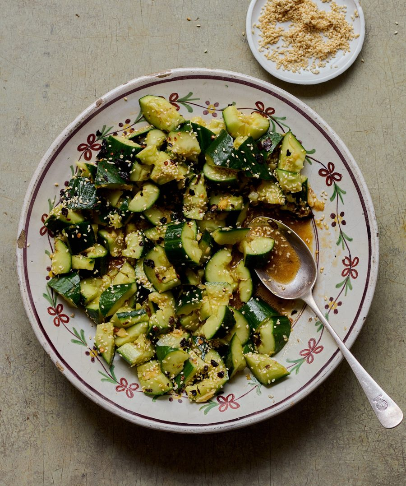

Smacked cucumbers with lime and chilli

These are seasoned with ancho chilli and lime for a light, Mexican twist on the classic.
For the dressing
Put the cucumbers on a large chopping board. Using a rolling pin, smack them a couple of times along their length, so the skin breaks in places, then cut the cucumbers in half. Chop into rough 2-3cm chunks, then put in a colander. Sprinkle over the sea salt, toss to combine, then leave to drain for 10 minutes.
Meanwhile, make the dressing: whisk the sugar, salt, garlic, ginger, soy sauce, brown rice vinegar, sesame oil and lime juice in a small bowl.
Gently toast the ancho chilli flakes in a dry frying pan on a medium-low heat for a minute, until fragrant, then tip into a spice grinder or mortar, and grind to a fine powder.
Drain the cucumber and arrange it on a large platter. Pour the dressing all over the top, toss to coat, then sprinkle over the ancho chilli powder and toasted sesame seeds, and serve.